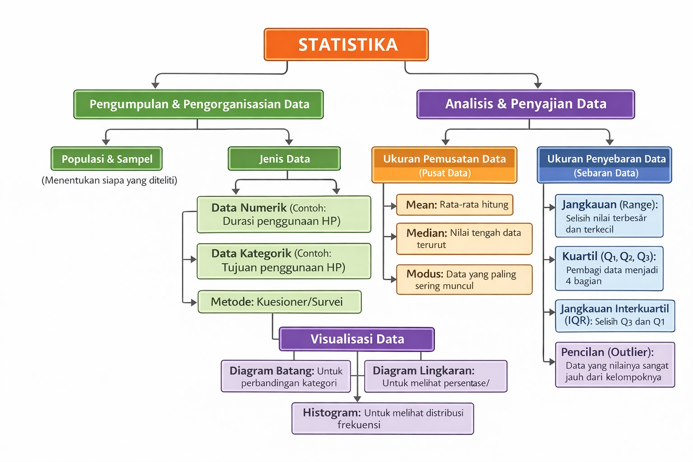
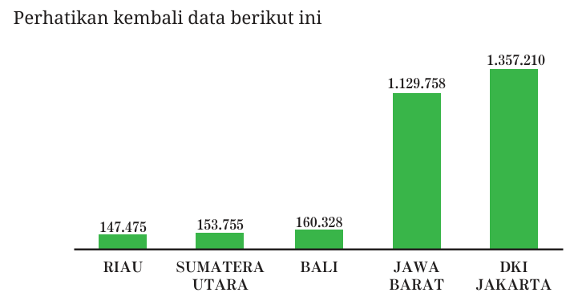
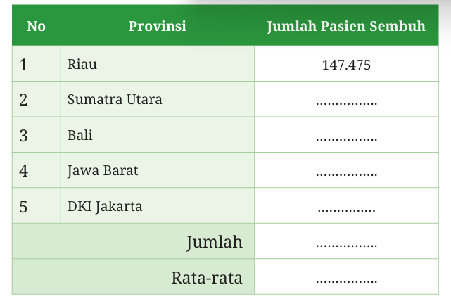
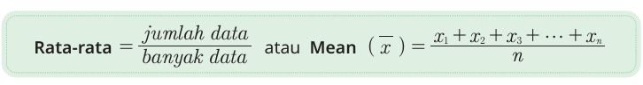
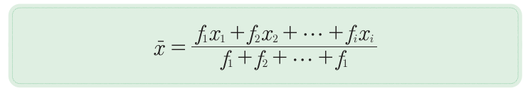
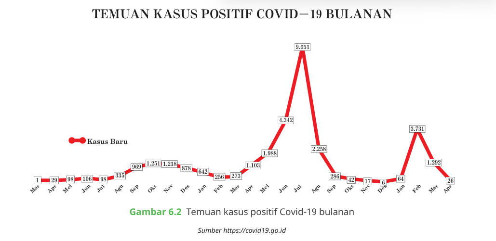
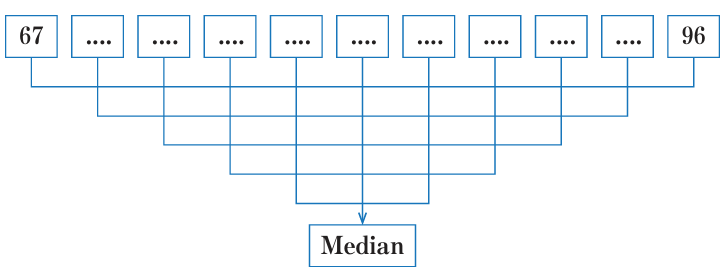
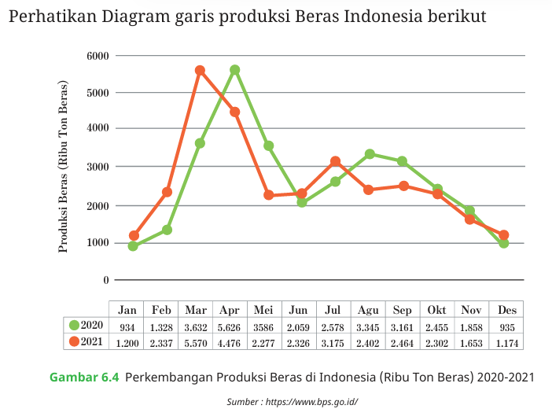

Bahan Ajar
UPI
Media DataVista
👋
Selamat datang di Media DataVista
Media interaktif untuk belajar statistika dengan cara menyenangkan. Klik Berikutnya untuk melihat identitas media.
LEMBAR KERJA PESERTA DIDIK (LKPD)
TAHAP PERTANYAAN MENDASAR
TAHAP PERTANYAAN MENDASAR
| Mata Pelajaran | : Matematika (Statistika) |
| Kelas/Fase | : VIII/ Fase D |
| Model | : Project-Based Learning |
| Proyek | : Analisis Data Penggunaan HP Siswa SMP |
A. Tujuan Kegiatan
- Mengidentifikasi fenomena penggunaan HP sebagai masalah yang dapat dikaji dengan statistika
- Merumuskan pertanyaan berbasis data untuk penelitian
- Memahami pentingnya literasi statistik dan data dalam kehidupan sehari-hari
- Menunjukkan sikap terbuka, berani, dan siap menghadapi tantangan proyek
B. Petunjuk Kegiatan
- Amati ilustrasi atau fenomena penggunaan HP yang disajikan oleh guru
- Diskusikan fenomena tersebut bersama kelompok
- Jawablah setiap pertanyaan dengan jujur dan berdasarkan hasil diskusi
- Gunakan bahasa yang jelas dan logis
Pengembangan Bahan Ajar Project-Based Learning Berbantuan Media Digital DataVista untuk Penguatan Literasi Statistik serta Resiliensi Siswa SMP
Wahyu Setiawan
2211397
S3 Pendidikan Matematika
Universitas Pendidikan Indonesia
Pembimbing:
Prof. Dr. H. Nanang Priatna, M.Pd
Prof. Drs. Suhendra, M. Ed., Ph.D
Dr. Bambang Avip Priatna, M.Si
Klik 'Berikutnya' untuk memulai petualangan statistikmu!
Daftar Isi
→
→
→
→
→
📖 Petunjuk Penggunaan Media DataVista
Petunjuk Penggunaan Media DataVista
1. Persiapan Awal
a. Pastikan perangkat terhubung ke internet dan browser sudah diperbarui.
b. Buka file Media DataVista sesuai pertemuan yang dipelajari.
2. Mengisi Identitas Kelompok
a. Isi nama kelompok dan nama sekolah di halaman pertama.
b. Tambahkan anggota kelompok satu per satu, isi nama dan pilih peran, lalu klik “Tambahkan ke Kelompok”.
c. Pastikan semua anggota tercantum sebelum lanjut.
3. Membaca Tujuan dan Petunjuk Kegiatan
a. Bacalah tujuan pembelajaran dan petunjuk kegiatan di slide kedua.
b. Diskusikan bersama anggota kelompok agar semua memahami target pembelajaran.
4. Mengerjakan Soal dan Aktivitas
a. Kerjakan setiap soal/aktivitas di setiap slide.
b. Gunakan kolom isian untuk menulis jawaban secara lengkap dan jujur.
• Untuk soal diskusi, tuliskan hasil diskusi kelompok di kolom yang tersedia.
5. Navigasi Antar Slide
a. Gunakan tombol “Selanjutnya” dan “Sebelumnya” untuk berpindah slide.
b. Pastikan tidak ada slide yang terlewat agar semua bagian terisi.
6. Menyimpan dan Mengunduh Hasil
a. Setelah semua soal selesai, masuk ke slide terakhir.
b. Klik tombol “Download PDF” untuk mengunduh hasil kerja kelompok.
c. Simpan file PDF di perangkat dan kirim ke guru jika diminta.
7. Selesai dan Refleksi
a. Setelah mengunduh PDF, klik tombol “Selesai” untuk menandai pengerjaan sudah tuntas.
b. Diskusikan bersama anggota kelompok tentang pengalaman belajar dan hal-hal yang perlu diperbaiki di pertemuan berikutnya.
8. Tips Penting
a. Jangan tutup browser sebelum mengunduh PDF agar data tidak hilang.
b. Jika ada anggota yang belum tercantum, tambahkan sebelum mengunduh hasil.
c. Jika terjadi kendala teknis, ulangi proses dari slide identitas kelompok.
9. Kontak Bantuan
a. Jika mengalami kesulitan, hubungi guru atau admin media pembelajaran.
1. Persiapan Awal
a. Pastikan perangkat terhubung ke internet dan browser sudah diperbarui.
b. Buka file Media DataVista sesuai pertemuan yang dipelajari.
2. Mengisi Identitas Kelompok
a. Isi nama kelompok dan nama sekolah di halaman pertama.
b. Tambahkan anggota kelompok satu per satu, isi nama dan pilih peran, lalu klik “Tambahkan ke Kelompok”.
c. Pastikan semua anggota tercantum sebelum lanjut.
3. Membaca Tujuan dan Petunjuk Kegiatan
a. Bacalah tujuan pembelajaran dan petunjuk kegiatan di slide kedua.
b. Diskusikan bersama anggota kelompok agar semua memahami target pembelajaran.
4. Mengerjakan Soal dan Aktivitas
a. Kerjakan setiap soal/aktivitas di setiap slide.
b. Gunakan kolom isian untuk menulis jawaban secara lengkap dan jujur.
• Untuk soal diskusi, tuliskan hasil diskusi kelompok di kolom yang tersedia.
5. Navigasi Antar Slide
a. Gunakan tombol “Selanjutnya” dan “Sebelumnya” untuk berpindah slide.
b. Pastikan tidak ada slide yang terlewat agar semua bagian terisi.
6. Menyimpan dan Mengunduh Hasil
a. Setelah semua soal selesai, masuk ke slide terakhir.
b. Klik tombol “Download PDF” untuk mengunduh hasil kerja kelompok.
c. Simpan file PDF di perangkat dan kirim ke guru jika diminta.
7. Selesai dan Refleksi
a. Setelah mengunduh PDF, klik tombol “Selesai” untuk menandai pengerjaan sudah tuntas.
b. Diskusikan bersama anggota kelompok tentang pengalaman belajar dan hal-hal yang perlu diperbaiki di pertemuan berikutnya.
8. Tips Penting
a. Jangan tutup browser sebelum mengunduh PDF agar data tidak hilang.
b. Jika ada anggota yang belum tercantum, tambahkan sebelum mengunduh hasil.
c. Jika terjadi kendala teknis, ulangi proses dari slide identitas kelompok.
9. Kontak Bantuan
a. Jika mengalami kesulitan, hubungi guru atau admin media pembelajaran.
🎯 Tujuan Akhir: Setelah mempelajari media ini, kalian diharapkan dapat memahami konsep statistika dasar, mampu menyajikan data dalam berbagai bentuk diagram, serta dapat menganalisis dan menginterpretasi data dengan benar.
🎯 Capaian Pembelajaran
peserta didik dapat menentukan dan menafsirkan rerata (mean), median, modus, dan jangkauan (range) dari data tersebut untuk menyelesaikan masalah (termasuk membandingkan suatu data terhadap kelompoknya, membandingkan dua kelompok data, memprediksi, membuat keputusan)
🎓 Tujuan Pembelajaran
Tujuan dari pembelajaran ini adalah:
- Siswa mampu menjelaskan dalam membaca data (dalam bentuk tabel, grafik/diagram) berdasarkan distribusi data, nilai rata-rata, median, modus dan sebaran data
- Siswa mampu menjelaskan dalam menyajikan data (dalam bentuk tabel, grafik/diagram) berdasarkan distribusi data, nilai rata-rata, median, modus dan sebaran data
- Siswa mampu menjelaskan dalam mengambil kesimpulan dari data yang disajikan (dalam bentuk tabel, grafik/diagram) yang berkaitan dengan distribusi data, nilai rata-rata, median, modus dan sebaran data
- Siswa mampu menjelaskan dalam mendeskripsikan data berdasarkan distribusi data, nilai rata-rata, median, modus dan sebaran data
- Siswa mampu menjelaskan dalam mengelompokkan dan mereduksi data berdasarkan distribusi data, nilai rata-rata, median, dan modus dan sebaran data
- Siswa mampu menjelaskan dalam mempresentasikan dan menyelesaikan masalah yang berkaitan dengan distribusi data, nilai rata-rata, median, dan modus dan sebaran data
- Siswa mampu menjelaskan dalam menganalisis dan menafsirkan data dari suatu kumpulan data yang berkaitan dengan distribusi data, nilai rata-rata, median, dan modus dan sebaran data
- Siswa mampu untuk membaca data (dalam bentuk tabel, grafik/diagram) berdasarkan distribusi data, nilai rata-rata, median, dan modus dan sebaran data
- Siswa mampu untuk menyajikan data (dalam bentuk tabel, grafik/diagram) berdasarkan distribusi data, nilai rata-rata, median, dan modus dan sebaran data
- Siswa mampu untuk mengambil kesimpulan dari data yang disajikan (dalam bentuk tabel, grafik/diagram) yang berkaitan dengan distribusi data, nilai rata-rata, median, dan modus dan sebaran data
- Siswa mampu mendeskripsikan data berdasarkan distribusi data, nilai rata-rata, median, dan modus dan sebaran data
- Siswa mampu untuk mengelompokkan dan mereduksi data berdasarkan distribusi data, nilai rata-rata, median, dan modus dan sebaran data
- Siswa mampu untuk mempresentasikan dan menyelesaikan masalah yang berkaitan dengan distribusi data, nilai rata-rata, median, dan modus dan sebaran data
- Siswa mampu untuk menganalisis dan menafsirkan data dari suatu kumpulan data yang berkaitan dengan distribusi data, nilai rata-rata, median, dan modus dan sebaran data
🗺️ Peta Konsep

📂 Pilih Pertemuan
📚 Materi
📁 Proyek - Pertemuan 1
Identitas Kelompok
Anggota Kelompok:
➕ Tambah Anggota Baru
2025/2026
🗂️ Penyajian Data Interaktif
Masukkan data dan pilih bentuk penyajian: Diagram Garis, Diagram Lingkaran, atau Diagram Batang.
📊 Kalkulator Statistik Interaktif
Masukkan data dan lihat cara menghitung Mean, Median, Modus, Kuartil, dan Jangkauan dengan langkah-langkah yang jelas!
Masukkan Data:
Pilih Perhitungan:
Termasuk Data Kelompok & Hasil Kalkulator
Mean

Diagram Batang tersebut menggambarkan pasien Covid-19 yang sembuh dari 5 Provinsi di Indonesia. Berapakah nilai rata-ratanya?
Untuk menjawab pertanyaan tersebut coba lakukan langkah-langkah berikut ini.
Langkah pertama, data yang ada di diagram batang diubah dalam bentuk tabel, seperti berikut ini.
Untuk menjawab pertanyaan tersebut coba lakukan langkah-langkah berikut ini.
Langkah pertama, data yang ada di diagram batang diubah dalam bentuk tabel, seperti berikut ini.

Langkah kedua, jumlahkan semua data tersebut, bagilah dengan banyak data, dalam hal ini karena ada 5 Provinsi, maka banyak ada ada 5. Hasil dari Pembagian tersebut menunjukkan nilai rata-rata dari Pasien yang sembuh Covid-19 untuk 5 Provinsi

Untuk menentukan rata-rata dari suatu data yang cukup banyak dapat digunakan dengan cara menjumlahkan hasil kali antara data dengan frekuensinya setelah itu dibagi dengan banyak data yang ada. Dalam bentuk umum dapat ditulis,

Modus

Untuk memahami modus dari suatu data, coba perhatikan data kasus Positif Covid-19 di salah satu Provinsi di Indonesia pada gambar 6.2. Dalam grafik tersebut dipaparkan data kasus Covid-19 di salah satu Provinsi di Indonesia mulai bulan Maret 2020 sampai April 2022. Dari tabel tersebut terlihat jelas bahwa data terendah pada bulan Maret 2020 dan data tertinggi pada bulan Juli 2021 sebesar 9.651 kasus. Modus dari suatu data adalah data yang sering muncul. Dengan demikian, kalian dapat menentukan modus pada gambar 6.3 yaitu data yang sering muncul pada bulan Juli 2021, yaitu sebesar 9.651 kasus, sehingga modus dari diagram tersebut adalah Juli 2021.
Median
Median dari kumpulan data merupakan suatu nilai data yang terletak di tengah-tengah kumpulan data yang telah diurutkan. Jadi, terdapat 50% dari banyak data yang nilai-nilainya lebih tinggi atau sama dengan median dan 50% dari banyak data yang nilai-nilainya kurang dari atau sama dengan median. Median dari kumpulan data yang jumlahnya ganjil dan data yang jumlahnya genap memiliki cara yang tidak sama.
a. Menentukan Median data ganjil
Langkah pertama yaitu mengurutkan data tersebut dari data terkecil sampai data terbesar
Langkah kedua yaitu pasangkan data yang sudah terurut dari sisi luar ke sisi dalam, sehingga menyisakan satu data tunggal
Data bagian tengah yang tidak memiliki pasangan dinamakan dengan Median.
Langkah pertama yaitu mengurutkan data tersebut dari data terkecil sampai data terbesar
Langkah kedua yaitu pasangkan data yang sudah terurut dari sisi luar ke sisi dalam, sehingga menyisakan satu data tunggal

Langkah ketiga yaituData bagian tengah yang tidak memiliki pasangan dinamakan dengan Median.
b. Menentukan Median data genap
Langkah pertama yaitu mengurutkan data tersebut dari data terkecil sampai data terbesar
Langkah kedua yaitu pasangkan data yang sudah terurut dari sisi luar ke sisi dalam, sehingga menyisakan satu data tunggal
Langkah ketiga yaitu
Karena ada dua data pada bagian tengah, maka nilai median berada di tengah-tengah kedua data tersebut. Cara menentukan median adalah dengan membagi dua jumlah dari dua data pada bagian tengah. Data bagian tengah yang tidak memiliki pasangan dinamakan dengan Median.
Langkah pertama yaitu mengurutkan data tersebut dari data terkecil sampai data terbesar
Langkah kedua yaitu pasangkan data yang sudah terurut dari sisi luar ke sisi dalam, sehingga menyisakan satu data tunggal
Langkah ketiga yaitu
Karena ada dua data pada bagian tengah, maka nilai median berada di tengah-tengah kedua data tersebut. Cara menentukan median adalah dengan membagi dua jumlah dari dua data pada bagian tengah. Data bagian tengah yang tidak memiliki pasangan dinamakan dengan Median.
Modus
Untuk memahami modus dari suatu data, coba perhatikan data kasus Positif Covid-19 di salah satu Provinsi di Indonesia pada gambar 6.2. Dalam grafik tersebut dipaparkan data kasus Covid-19 di salah satu Provinsi di Indonesia mulai bulan Maret 2020 sampai April 2022. Dari tabel tersebut terlihat jelas bahwa data terendah pada bulan Maret 2020 dan data tertinggi pada bulan Juli 2021 sebesar 9.651 kasus. Modus dari suatu data adalah data yang sering muncul. Dengan demikian, kalian dapat menentukan modus pada gambar 6.3 yaitu data yang sering muncul pada bulan Juli 2021, yaitu sebesar 9.651 kasus, sehingga modus dari diagram tersebut adalah Juli 2021.
Median
Median dari kumpulan data merupakan suatu nilai data yang terletak di tengah-tengah kumpulan data yang telah diurutkan. Jadi, terdapat 50% dari banyak data yang nilai-nilainya lebih tinggi atau sama dengan median dan 50% dari banyak data yang nilai-nilainya kurang dari atau sama dengan median. Median dari kumpulan data yang jumlahnya ganjil dan data yang jumlahnya genap memiliki cara yang tidak sama.
a. Menentukan Median data ganjil
Langkah pertama yaitu mengurutkan data tersebut dari data terkecil sampai data terbesar
Langkah kedua yaitu pasangkan data yang sudah terurut dari sisi luar ke sisi dalam, sehingga menyisakan satu data tunggal
Langkah ketiga yaitu
Data bagian tengah yang tidak memiliki pasangan dinamakan dengan Median.
Langkah pertama yaitu mengurutkan data tersebut dari data terkecil sampai data terbesar
Langkah kedua yaitu pasangkan data yang sudah terurut dari sisi luar ke sisi dalam, sehingga menyisakan satu data tunggal
Data bagian tengah yang tidak memiliki pasangan dinamakan dengan Median.
b. Menentukan Median data genap
Langkah pertama yaitu mengurutkan data tersebut dari data terkecil sampai data terbesar
Langkah kedua yaitu pasangkan data yang sudah terurut dari sisi luar ke sisi dalam, sehingga menyisakan satu data tunggal
Langkah ketiga yaitu
Karena ada dua data pada bagian tengah, maka nilai median berada di tengah-tengah kedua data tersebut. Cara menentukan median adalah dengan membagi dua jumlah dari dua data pada bagian tengah. Data bagian tengah yang tidak memiliki pasangan dinamakan dengan Median.
Langkah pertama yaitu mengurutkan data tersebut dari data terkecil sampai data terbesar
Langkah kedua yaitu pasangkan data yang sudah terurut dari sisi luar ke sisi dalam, sehingga menyisakan satu data tunggal
Langkah ketiga yaitu
Karena ada dua data pada bagian tengah, maka nilai median berada di tengah-tengah kedua data tersebut. Cara menentukan median adalah dengan membagi dua jumlah dari dua data pada bagian tengah. Data bagian tengah yang tidak memiliki pasangan dinamakan dengan Median.
Jangkauan
Jangkauan (range) adalah selisih antara data terbesar dan data terkecil. Jangkauan digunakan untuk mengukur penyebaran data yang paling sederhana.

Gambar diagram garis tersebut menggambarkan perkembangan produksi beras di Indonesia dalam satuan Ribuan Ton untuk tahun 2020 (garis hijau) dan tahun 2021 (garis merah). Dalam diagram garis tersebut terlihat bahwa produksi beras Indonesia mengalami kenaikan dan penurunan pada bulan-bulan tertentu. Selisih produksi beras tertinggi dan terendah dalam setahun dapat ditentukan dengan cara mengurangi data tertinggi dengan data terendah
Selisih dari data tertinggi dengan data terendah dinamakan dengan Jangkauan. Jadi, jangkauan dapat diartikan dengan mengurangi data tertinggi dengan data terendah, maka dapat disimpulkan bahwa Jangkauan adalah selisih antara nilai data terbesar dengan nilai data terkecil. Jangkauan diperoleh dengan mengurangi data terbesar dengan data terkecil
Kuartil
Ukuran penyebaran data yang kedua adalah kuartil. Jika median adalah membagi data yang diurutkan menjadi dua kelompok yang sama banyak, maka kuartil adalah membagi data yang diurutkan menjadi empat yang sama banyak, sehingga masing-masing kelompok terdiri atas ¼ bagian data. Ada tiga jenis kuartil, yaitu kuartil pertama/kuartil bawah (Q1), kuartil kedua/kuartil tengah atau median (Q2), dan kuartil ketiga/kuartil atas (Q3).
Kuartil
Ukuran penyebaran data yang kedua adalah kuartil. Jika median adalah membagi data yang diurutkan menjadi dua kelompok yang sama banyak, maka kuartil adalah membagi data yang diurutkan menjadi empat yang sama banyak, sehingga masing-masing kelompok terdiri atas ¼ bagian data. Ada tiga jenis kuartil, yaitu kuartil pertama/kuartil bawah (Q1), kuartil kedua/kuartil tengah atau median (Q2), dan kuartil ketiga/kuartil atas (Q3).
Penyajian Data
Contoh penyajian data dalam empat bentuk umum: tabel, diagram batang, diagram garis, dan diagram lingkaran.
Tabel Produksi Beras + Analisis Siswa
| Bulan | Produksi (Ribu Ton) | Analisis Siswa |
|---|---|---|
| Jan | 420 | |
| Feb | 460 | |
| Mar | 510 | |
| Apr | 480 |
Diagram Batang
420
460
510
480
JanFebMarApr
Diagram Garis
Diagram Lingkaran
Padi 32%
Jagung 30%
Kedelai 38%
C. Aktivitas 1: Mengamati Fenomena (Infografis)
Perhatikan fenomena penggunaan HP di bawah ini! Perhatikan informasi
yang berupa angka, waktu, atau perbandingan, bukan pendapat pribadi

Pertanyaan
1. Informasi berbentuk angka atau perbandingan apa yang kalian lihat
dalam infografis tersebut?
2. Perbedaan utama apa yang terlihat dalam penggunaan HP pada
infografis tersebut?
3. Apakah pola penggunaan HP dalam infografis tersebut sesuai dengan pengalaman kalian di kelas?
Jelaskan alasan kalian:
D. Aktivitas 2: Memahami Pertanyaan Mendasar Proyek
1. Pertanyaan Mendasar Proyek
Pertanyaan Mendasar Proyek:
“Bagaimana pola penggunaan HP siswa kelas VIII dan apa maknanya jika dianalisis menggunakan ukuran pemusatan dan penyebaran data?”
“Bagaimana pola penggunaan HP siswa kelas VIII dan apa maknanya jika dianalisis menggunakan ukuran pemusatan dan penyebaran data?”
Catatan: Istilah ukuran pemusatan dan penyebaran data akan dipelajari
lebih rinci pada pertemuan berikutnya. Pada tahap ini, kalian cukup
memahami maknanya secara umum.
2. Pahami Setiap Bagian Pertanyaan
Istilah-istilah ini akan dipelajari lebih mendalam pada pertemuan berikutnya.
| Bagian Pertanyaan | Penjelasan | Mengapa Penting | Contoh |
|---|---|---|---|
| Pola penggunaan HP | Cara siswa menggunakan HP dalam kehidupan sehari-hari. | Untuk memahami kebiasaan dan dampaknya | Durasi, waktu, tujuan penggunaan. |
| Siswa kelas VIII | Populasi yang akan diteliti. | Untuk menentukan siapa yang akan kita wawancarai | Semua siswa di kelas VIII |
| Ukuran pemusatan data | Nilai yang mewakili pusat data (mean, median, dan modus) | Untuk mengetahui gambaran umum pola penggunaan HP | Rata-rata durasi penggunaan HP |
| Penyebaran data | Seberapa beragam data (jangkauan, quartil, IQR) | Untuk melihat perbedaan kebiasaan penggunaan HP antar siswa | Perbedaan durasi antara siswa yang paling banyak dan paling sedikit |
Contoh Pemahaman:
Jika rata-rata durasi penggunaan HP adalah 4 jam per hari, maka sebagian
besar siswa menggunakan HP sekitar 4 jam
3. Jawab Pertanyaan Pemahaman
a. Menurut kalian, apa yang dimaksud dengan pola penggunaan HP?
b. Mengapa kita perlu menganalisis data menggunakan ukuran pemusatan (Mean, Median, Modus)?
c. Mengapa penyebaran data juga penting untuk dianalisis ?
d. Bagaimana hasil analisis ini dapat membantu kita membuat keputusan
yang lebih baik tentang penggunaan HP?
E. Aktivitas 3: Mengidentifikasi Data yang Diperlukan
Untuk menjawab pertanyaan mendasar proyek, tentukan data apa saja yang perlu dikumpulkan?
Tabel Identifikasi Data
| Jenis Data | Contoh Pertanyaan | Alasan Penting |
|---|---|---|
| Durasi Penggunaan HP | Berapa jam penggunaan HP per hari? |
Data ini penting karena: |
| Waktu Penggunaan HP | Kapan HP paling sering digunakan |
Data ini penting karena: |
| Tujuan Penggunaan HP | Untuk apa HP paling sering digunakan |
Data ini penting karena: |
F. Aktivitas 4: Prediksi dan Dugaan Awal
Sebelum mengumpulkan data, buatlah prediksi berdasarkan pengalaman dan pengamatan kalian selama ini.
Tabel Prediksi Awal
| No | Komponen Analisis | Prediksi Kalian | Alasan |
|---|---|---|---|
| 1 | Prediksi Mean (Rata-rata Durasi) | Berapa jam? | |
| 2 | Prediksi Modus (Tujuan Dominan) | ||
| 3 | Prediksi Modus (Waktu Dominan) | ||
| 4 | Prediksi Jangkauan | Dari jam, hingga jam |
Catatan:
Jangkauan adalah selisih antara data terbesar dan terkecil.
Pada tahap prediksi tidak ada jawaban benar atau salah. Yang dinilai adalah alasan logis, bukan ketepatan hasil.
G. Aktivitas 5: Mengidentifikasi Tantangan dan Solusi
Ketika mengumpulkan data dari teman-teman, apa saja tantangan yang mungkin dihadapi? Selain contoh yang sudah ada, tuliskan minimal dua tantangan lain berdasarkan pengalaman kalian sendiri.
Tabel Tantangan dan Solusi
| No | Tantangan Potensial | Dampak | Solusi |
|---|---|---|---|
| 1 | Responden tidak jujur dalam menjawab |
Data tidak akurat |
Jaminan kerahasiaan dengan menggunakan kode responden |
| 2 | Responden sibuk atau tidak bersedia |
Data tidak lengkap |
................................................. |
| 3 | ...................... |
.................................... |
...................................................... |
| 4 | ....................... |
............................... |
................................................ |
Catatan: Identifikasi minimal 2 tantangan utama.
H. Aktivitas 6: Literasi Statistik, Resiliensi, dan Refleksi
1. Apa itu Literasi Statistik
Literasi statistik adalah kemampuan untuk memahami, menginterpretasi, dan menggunakan informasi statistik dalam kehidupan sehari-hari. Ini termasuk kemampuan untuk:
- a. Mengumpulkan data dengan benar.
- b. Menganalisis data menggunakan metode statistik.
- c. Menginterpretasi hasil analisis dengan benar.
- d. Membuat keputusan berdasarkan data
Pertanyaan Refleksi:
Pilih satu pertanyaan refleksi yang menurut kalian paling penting, lalu jawab dengan sungguh-sungguh.
A. Bagaimana proyek ini akan membantu kalian mengembangkan literasi statistik?
B. Mengapa literasi statistik penting dalam kehidupan modern?
2. Apa itu Resiliensi?
Resiliensi adalah kemampuan untuk menghadapi tantangan, bangkit dari kegagalan, dan terus maju meskipun mengalami kesulitan. Dalam proyek ini, resiliensi berarti:
- a. Tidak mudah menyerah ketika menghadapi kesulitan.
- b. Mencari solusi kreatif untuk mengatasi masalah.
- c. Belajar dari kesalahan dan terus berkembang.
- d. Bekerja sama dengan tim untuk mengatasi tantangan.
Pertanyaan Refleksi:
A. Apa tantangan yang mungkin akan kalian hadapi dalam proyek ini?
B. Bagaimana kalian akan menunjukkan resiliensi ketika menghadapi tantangan tersebut?
1. Mengapa statistika diperlukan untuk memahami kebiasaan penggunaan HP secara objektif?
2. Apa manfaat menggunakan data nyata dibandingkan hanya berdasarkan pendapat pribadi?
3. Apa yang paling menarik bagi saya tentang proyek ini?
Checklist Penyelesaian LKPD
Pastikan kalian telah menyelesaikan semua aktivitas:
J. Aktivitas 8: Refleksi Awal
Jawab pertanyaan-pertanyaan berikut secara jujur dan mendalam
1. Mengapa statistika diperlukan untuk memahami kebiasaan penggunaan HP secara objektif?
2. Apa manfaat menggunakan data nyata dibandingkan hanya berdasarkan pendapat pribadi?
3. Apa yang paling menarik bagi saya tentang proyek ini?
4. Apa yang paling membuat saya khawatir atau ragu tentang proyek ini?
5. Bagaimana kelompok kami akan memastikan semua anggota berkontribusi secara aktif?
6. Apa yang ingin kelompok kami pelajari dari proyek ini?